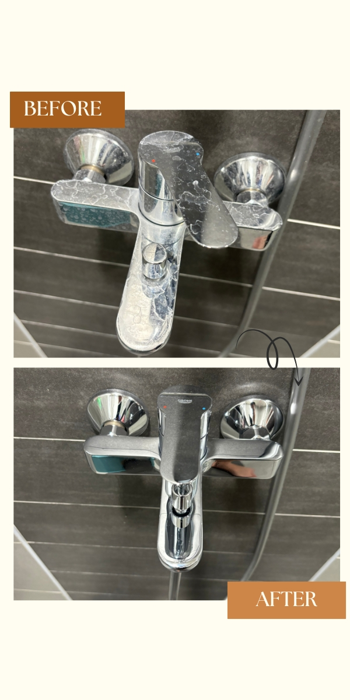
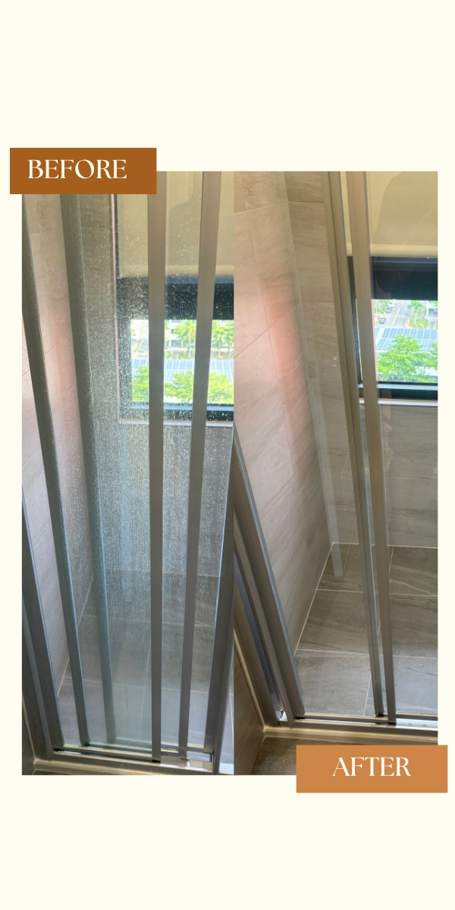
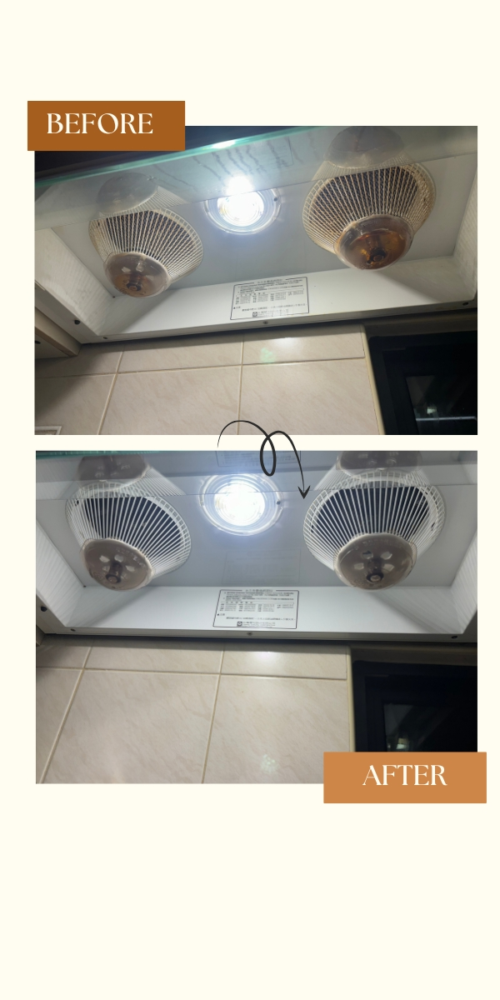
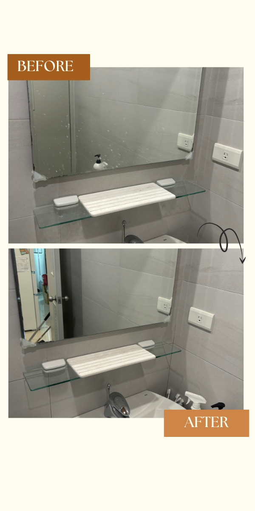
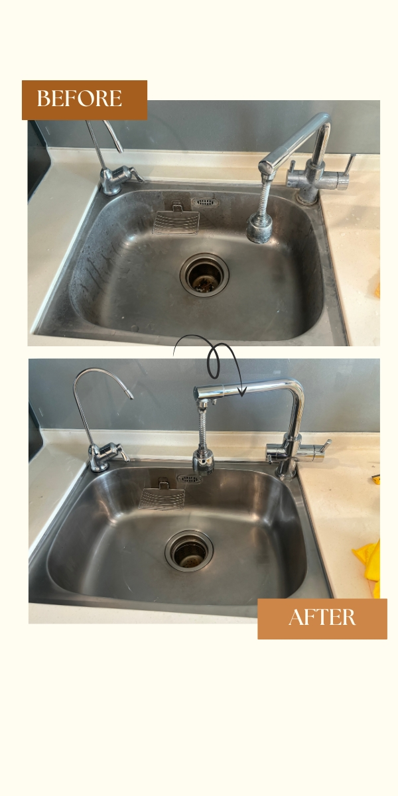
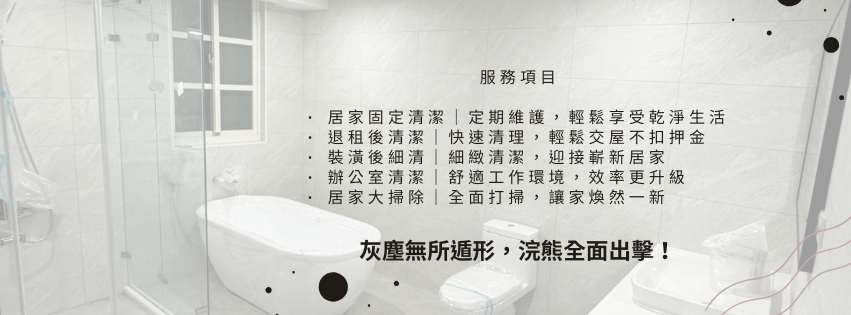

標準居家清潔
適合定期維持居家整潔
以 4 小時為一個服務時段， 可依照當天最需要處理的區域安排清潔順序。 建議預約前先告訴我們您的清潔重點。
- 客廳與公共空間
- 廚房表面清潔
- 浴室與廁所
- 地板清潔
- 外部櫃體與家具表面
NT$1,900／4 小時
上午 8:30–12:30 ／ 下午 2:00–6:00
上午 8:30–12:30 ／ 下午 2:00–6:00
從日常居家清潔、大掃除，到退租入住與裝潢後細清， 依照您的空間與需求規劃適合的清潔方式， 用細心與專業，讓回家成為真正放鬆的事。
每個家的生活方式都不同，我們從需求確認開始， 針對真正需要清潔的地方安排服務， 不讓您的時間和預算花在不必要的項目上。
清潔前先確認重點區域與需求， 讓服務內容更符合您的期待。
清潔人員攜帶所需工具與清潔用品， 不必另外準備。
根據坪數、髒污程度與需求， 安排更適合的清潔內容。
完成後可一起確認清潔成果， 有需要調整的地方即時溝通。
從固定時數的日常清潔到需要現場評估的深度清潔， 都可以依照您的空間狀況安排。 場勘評估免費，歡迎先透過 LINE 詢問。
以 4 小時為一個服務時段， 可依照當天最需要處理的區域安排清潔順序。 建議預約前先告訴我們您的清潔重點。
針對一般清潔較難處理的區域進行更完整的清潔， 適合年終、春節前或一段時間沒有徹底整理的空間。
搬家已經夠忙了， 讓我們協助處理空屋或租屋空間的基礎與重點清潔， 降低搬入或交屋前的整理負擔。
針對裝潢施工後容易留下的粉塵與細微髒污進行清潔， 讓完成裝修的空間更接近安心入住的狀態。
有些髒污不是看不見，而是每天看久了就習慣了。 小地方清乾淨，整個空間的感覺就會不一樣。

浴室清潔針對長期接觸水氣後留下的水垢與污漬， 讓五金表面恢復原有的乾淨質感。

浴室清潔浴室玻璃最容易因水氣與清潔用品留下白霧， 深度處理後視覺更清爽。

廚房清潔針對容易黏附於廚房表面的油污進行處理， 減少摸起來油膩黏手的感覺。

浴室清潔處理水痕與日常使用留下的髒污， 讓鏡面重新恢復清晰乾淨。

廚房清潔水槽周邊常同時累積水垢與油污， 細節清潔後整體廚房會更加明亮。
.jpg) 深度清潔
深度清潔
從檯面、五金到容易忽略的小細節， 一次把浴室重新整理乾淨。
※ 實際清潔成果會依材質、使用年限與污垢形成狀況有所不同。
第一次找居家清潔不用擔心， 從詢問到完成服務，每個階段我們都會先與您確認。
告訴我們希望清潔的空間、日期與需求。
透過照片或現場了解髒污狀況與清潔重點。
依服務內容確認費用與預約時間。
清潔人員依約定時間到府完成服務。
完成後確認成果，有需要再即時溝通。

小浣熊居家清潔是一支來自台南的清潔團隊。 品牌名稱來自總是喜歡用小手仔細清洗東西的小浣熊， 也代表著我們希望用認真、細心的方式， 對待每一次到府服務。
我們知道每個家庭的生活方式、環境狀況和需求都不同， 所以比起套用完全相同的清潔方式， 我們更重視服務前的溝通，以及真正需要被處理的細節。
您不用把難得的休息日全部留給打掃。 把整理空間的事情交給我們， 把時間留給家人，也留給自己。
第一次預約清潔服務嗎？ 我們先把最常遇到的問題整理在這裡。
不確定自己的需求適合哪一種清潔方案也沒關係。 加入 LINE 告訴我們空間狀況與希望處理的區域， 我們會協助您評估。